2023年北京市中考生物真题 原卷解析
2023年北京市初中学业水平考试
生物试卷
考 生 须 知 | 1．本试卷共8页，共两部分，共32题，满分70分。考试时间70分钟。 2．在试卷和草稿纸上准确填写姓名、准考证号、考场号和座位号。 3．试题答案一律填涂或书写在答题卡上，在试卷上作答无效。 4．在答题卡上，选择题用2B铅笔作答，其他试题用黑色字迹签字笔作答。 5．考试结束，将本试卷、答题卡和草稿纸一并交回。 |
第一部分
本部分共25题，每题1分，共25分。在每题列出的四个选项中，选出最符合题目要求的一项。
1. 除病毒外，生物体结构和功能的基本单位是（ ）
A. 组织B. 细胞C. 器官D. 系统
【答案】B
【解析】
【分析】除病毒外细胞是生物体结构和功能的基本单位，是进行生命活动的基本场所。
【详解】除病毒外细胞是生物体结构和功能的基本单位，生物体由细胞构成组织，组织构成器官，器官构成系统，进而构成生物体。
【点睛】细胞是生命活动的基本结构和功能单位。
2. 下列由一个细胞构成，能独立完成生命活动的生物是（ ）
A. 水螅B. 草履虫C. 水绵D. 线虫
【答案】B
【解析】
【分析】有些生物的整个身体就是一个细胞，称为单细胞生物。
【详解】单细胞生物的整个身体由一个细胞构成，能独立完成生命活动。水螅、水绵和线虫都是多细胞生物。草履虫的整个身体由一个细胞构成，能独立完成生命活动，属于单细胞生物，因此ACD错误，B正确。
故选B。
3. 在显微镜下观察洋葱鳞片叶内表皮临时装片，视野如下图。下列相关叙述错误的是（ ）

A. ①为洋葱鳞片叶内表皮细胞
B. ②可能是由于加盖盖玻片操作不规范引起的
C. 用碘液染色后能够更清晰地观察到细胞核
D. 细胞的放大倍数为目镜与物镜放大倍数之和
【答案】D
【解析】
【分析】制作洋葱表皮细胞临时装片的简要步骤：擦、 滴（清水）、撕 、展 、盖、 染 、吸。图中，①是洋葱鳞片叶内表皮细胞，②是气泡。
【详解】A．一般来说，气泡在显微镜的视野中呈现为具有较黑、较宽边缘的图像，形状为圆形或椭圆形。会变形、会移动；而细胞有一定的形态和结构，不变形、不移动。因此，①为洋葱鳞片叶内表皮细胞，②为气泡，A正确。
B．盖盖玻片时，用镊子夹起盖玻片的一边，使它的另一边先接触载玻片上的水滴，然后缓缓放下，这样可以避免盖玻片下面出现气泡而影响观察。故②可能是由于加盖盖玻片操作不规范引起的，B正确。
C．细胞核中容易被碱性染料染成深色的物质，叫做染色体。故用碘液染色后能够更清晰地观察到细胞核，C正确。
D．显微镜的放大倍数=目镜放大倍数×物镜放大倍数，故细胞的放大倍数为目镜与物镜放大倍数之积，D错误。
故选D。
4. 正常情况下，人体细胞在形态、结构和生理功能上发生差异，形成多种类型细胞的过程称为（ ）
A. 细胞分裂B. 细胞生长C. 细胞分化D. 细胞衰老
【答案】C
【解析】
【分析】多细胞生物体能够由小长大的原因是细胞生长、分裂、分化的共同结果。
【详解】A．细胞分裂就是一个细胞分成两个细胞的过程，细胞分裂使细胞数目增多，细胞分裂是生物体生长、发育和繁殖的基础，A错误。
B．新分裂产生的细胞体积很小，需要不断从周围环境中吸收营养物质，并且转变成组成自身的物质，体积逐渐增大，这就是细胞的生长，B错误。
C．生物在个体发育过程中，一个或一种细胞通过分裂产生的后代，在形态、结构和生理功能上发生差异性的变化，这个过程叫做细胞分化。细胞分化产生了不同的细胞群（组织）。可见，人体细胞在形态、结构和生理功能上发生差异，形成多种类型细胞的过程称为细胞分化，C正确。
D．细胞衰老是指细胞在执行生命活动过程中，随着时间的推移，细胞增殖与分化能力和生理功能逐渐发生衰退的变化过程，D错误。
故选C。
5. “海洋牧场”有重要的经济价值和生态价值。它是指在特定海域内，人工投放藻类、贝类和鱼虾等海洋经济生物种苗，利用海洋中的天然饵料等进行集中养殖和科学管理，类似于在陆地上放牧牛羊。下列关于“海洋牧场”的叙述错误的是（ ）
A. 属于海洋生态系统B. 能量最终来源于太阳能
C. 其中的藻类可以制造有机物D. 有无限的自我（动）调节能力
【答案】D
【解析】
【分析】1．在一定的空间范围内，生物与环境所形成的统一的整体叫生态系统。生态系统包括生物成分和非生物成分，生物成分包括生产者(绿色植物)、消费者(动物)和分解者(细菌、真菌)。一片森林，一块农田，一片草原生态系统，一个湖泊，一条河流等都可以看成一个个生态系统。
2．生态系统中，生产者（植物）能够通过光合作用制造有机物，并将光能储存在有机物中，为自身和其他生物提供了食物和能量，因此，能量流动的起点是从植物固定太阳能开始的。
3．生态平衡是指在一定的时间内，一个自然生态系统内的生物种类和数量一般是相对稳定的，它们之间及其与环境间的能量流动和物质循环也保持相对稳定的状态。生态平衡是一种动态的平衡，它依赖于生态系统的自我调节能力。一般来说，生态系统中生物的种类越多，食物链和食物网越复杂，生态系统的调节能力就越强。
【详解】A．海洋生态系统是由海洋生物群落和海洋环境两大部分组成。由题干可知，“海洋牧场”属于海洋生态系统，A正确。
BC．藻类能够通过光合作用制造有机物，并将光能储存在有机物中，为自身和其他生物提供了食物和能量，因此，能量流动的起点是从植物固定太阳能开始的，所以，该生态系统能量的最终来源是太阳光能，BC正确。
D．生态系统具有一定的自动调节能力，但这个自动调节能力是有限制的，超过了这个限制，生态平衡就会遭到破坏，D错误。
故选D。
6. 甜椒的花中能够发育形成果实的结构是（ ）
A. 雌蕊B. 雄蕊C. 胚珠D. 子房
【答案】D
【解析】
【分析】一朵花由花到果实的发育经历的生理过程，排列顺序正确的是开花→传粉→受精→果实。子房继续发育成果实，胚珠发育成种子。
【详解】A．一朵完全花包括花柄、花托、花萼、花冠和花蕊等结构。花蕊分为雄蕊和雌蕊。雄蕊包括花药和花丝，花药里有许多花粉，花粉能产生精子。雌蕊包括柱头、花柱和子房，子房内有一个或多个胚珠，胚珠里面有卵细胞。花蕊（雌蕊和雄蕊）与果实和种子的形成有直接关系，它们是花的主要结构，AB错误。
CD．在完成传粉和受精两个重要的生理过程以后，花的大部分结构凋落，只有子房继续发育，最终子房发育成果实，子房壁发育成果皮，胚珠发育成种子，珠被发育为种皮，受精卵发育为胚，受精极核发育为胚乳。可见，甜椒的花中能够发育形成果实的结构是子房，C错误、D正确。
故选D。
7. 用黄豆种子发豆芽，下列做法不合理的是（ ）
A. 选取籽粒饱满的种子B. 提供适宜的发芽温度
C. 种子始终浸没在水中D. 发芽过程保持通风透气
【答案】C
【解析】
【分析】种子是否萌发与自身条件、外部环境条件有关。
【详解】种子的萌发的环境条件为一定的水分、适宜的温度和充足的空气。自身条件是胚是完整的、胚是活的、种子不在休眠期以及胚发育所需的营养物质。所以用黄豆种子发豆芽，应该选取籽粒饱满的种子，提供适宜的发芽温度，发芽过程保持通风透气。如果种子始终浸没在水中，无法获得充足的空气，无法进行呼吸，种子就不能萌发，因此ABD不符合题意，C符合题意。
故选C。
8. 平衡膳食能最大程度地满足人体的营养需要，保证健康。下列做法不符合平衡膳食的是（ ）
A. 不吃早餐，偏食挑食B. 吃动平衡，健康体重
C. 规律进餐，适量饮水D. 食物多样，合理搭配
【答案】A
【解析】
【分析】合理营养是指全面而平衡的营养。“全面”是指摄取的营养素（六类营养物质和膳食纤维）种类要齐全；“平衡”是指摄取各种营养素的量要合适（不少也不多，比例适当），与身体的需要要保持平衡。
【详解】A．早餐是一天中最重要的一餐，它能够提供身体所需的能量和养分，帮助维持正常的代谢和身体机能。不吃早餐可能导致能量不足，影响学习和集中注意力。偏食、挑食等不合理的膳食习惯会导致营养不良或营养过剩，A错误。
B．吃动平衡指的是均衡摄取各种营养物质，适量运动；保持适当的健康体重，身体才能更好地发挥功能，B正确。
C．规律进餐指的是按照固定的时间和适量进食，有助于维持身体的新陈代谢和能量供给。适量饮水有助于维持体内水分平衡，促进物质代谢，C正确。
D．食物多样指的是摄入各种食物类别，例如谷物、蔬菜、水果、肉类等，以获取全面的营养。合理搭配指的是在每餐中合理搭配不同的食物，以提供身体所需的各种营养物质，D正确。
故选A。
9. 同学们按下图所示进行实验，一段时间后向两支试管中分别滴加碘液，观察颜色变化。下列叙述错误的是（ ）
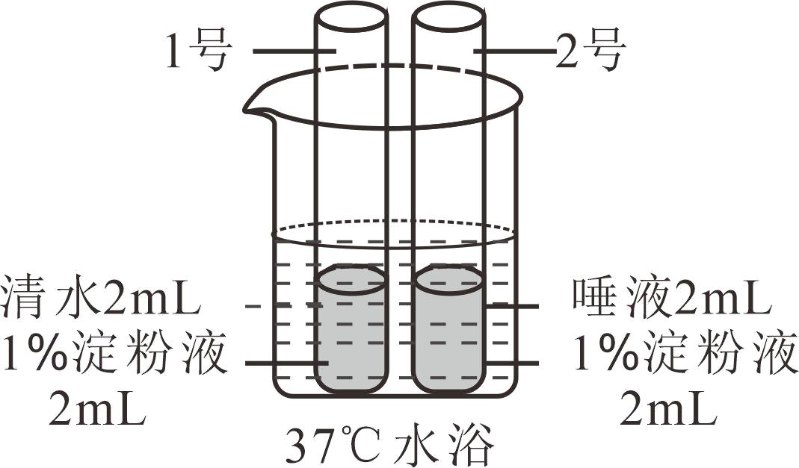
A. 目的是探究唾液对淀粉的消化作用B. 试管中的液体需要充分混合均匀
C. 水浴温度为37℃，模拟了人体体温D. 2号试管溶液的蓝色比1号试管的深
【答案】D
【解析】
【分析】（1）唾液腺的开口在口腔，唾液腺能分泌唾液，唾液中含有唾液淀粉酶，能够将淀粉初步消化为麦芽糖。
（2）淀粉遇到碘液会变蓝，麦芽糖遇到碘液不会变蓝。
（3）酶的活性受温度的影响，高温可能会使酶失去活性，低温会使酶的活性受到抑制，在37℃左右唾液淀粉酶的催化作用最强。
【详解】A．本实验中1号试管加入了清水、2号试管加入了唾液，其他条件相同且适宜。因此，这俩个试管能够形成以唾液为变量的一组对照实验，目的是探究唾液对淀粉的消化作用，A正确。
B．对照试验遵循单一变量原则，以便排除偶然因素 影响。该实验中的唯一变量是唾液，其他条件应该相同且适宜，因此试管中的液体需要充分混合均匀，B正确。
影响。该实验中的唯一变量是唾液，其他条件应该相同且适宜，因此试管中的液体需要充分混合均匀，B正确。
C．酶的活性受温度的影响，温度过高会使酶丧失活性，温度过低会抑制酶的活性，而在37℃左右唾液淀粉酶的催化作用最强。因此实验过程中，应将实验装置放在37℃的水中进行水浴加热。这是模拟人体的口腔温度，为了保证唾液淀粉酶的活性，如此实验才能成功，C正确。
D．实验中，1号试管加入了清水，水不能将淀粉分解，因此该试管中有淀粉存在，滴加碘液后变蓝。实验中，2号试管加入了唾液，唾液中的唾液淀粉酶将淀粉全部分解为麦芽糖，麦芽糖遇碘液不变蓝，因此该试管滴加碘液后不变蓝，D错误。
故选D。
10. 血液成分中，富含血红蛋白，具有运输氧功能的是（ ）
A. 白细胞B. 红细胞C. 血小板D. 血浆
【答案】B
【解析】
【分析】血液包括血浆和血细胞，血细胞包括红细胞、白细胞和血小板。
【详解】A.白细胞具有细胞核，能吞噬发炎部位的病菌，具有防御和保护的作用，错误。
B.红细胞富含血红蛋白，功能主要是运输氧气，还可以运输部分二氧化碳，正确。
C.血小板具有止血和加速凝血的作用，错误。
D.血浆中含有大量的水，还含有血浆蛋白、葡萄糖、氨基酸、无机盐等，能运载血细胞，运输营养物质和废物，错误。
故选B。
【点睛】解答此题的关键是掌握血液的成分及各组成的功能。
11. 一位B型血的外伤患者需要大量输血，应为他输入（ ）
A. A型血B. B型血C. O型血D. AB型血
【答案】B
【解析】
【分析】输血时必须注意血型的选择，应该以输入同型血为原则，否则会发生凝集反应，据此作答。
【详解】以输入同型血为原则。但在紧急情况下，AB血型的人可以接受任何血型，但只能输给AB型的人，O型血可以输给任何血型的人，但只能接受O型血。如果异血型者之间输血输得太快太多，输进来的凝集素来不及稀释，红细胞可能引起凝集反应。一位B型血的外伤患者需要大量输血，应为他输入B型血，O型血只能在紧急情况下，少量、缓慢输入，若输入A型血、AB型血会发生凝集反应，不可取，B正确。
故选B。
12. 人体产生的代谢废物主要以尿液的形式排出体外。健康人的尿液中一般不含（ ）
A. 血细胞B. 尿素C. 无机盐D. 尿酸
【答案】A
【解析】
【分析】尿的形成要经过肾小球和肾小囊壁的过滤作用和肾小管的重吸收作用。当血液流经肾小球时，除了血细胞和大分子的蛋白质外，其他的如水、无机盐、尿素、葡萄糖等物质会滤过到肾小囊腔形成原尿；当原尿流经肾小管时，其中大部分水、部分无机盐和全部的葡萄糖被重新吸收回血液，而剩下的如尿素、尿酸、一部分无机盐和水构成了尿液的成分。
【详解】血液流经肾小球时，血液中的尿酸、尿素、水、无机盐和葡萄糖等物质通过肾小球的过滤作用，过滤到肾小囊中，形成原尿。当原尿流经肾小管时，原尿中对人体有用的全部葡萄糖、大部分水和部分无机盐，被肾小管重新吸收，送回到肾小管周围毛细血管的血液里。原尿经过肾小管的重吸收作用，剩下的水和无机盐、尿素和尿酸等就形成了尿液。所以一般情况下，健康人的尿液中不应有的是血细胞，故A符合题意，BCD不符合题意。
故选A。
13. 下列关于人体肺泡的叙述错误的是（ ）
A. 肺泡数目多B. 肺泡是细支气管末端膨大形成的
C. 肺泡壁很薄D. 血液流经肺泡外毛细血管后氧气减少
【答案】D
【解析】
【分析】肺由大量的肺泡组成，肺泡数目多，增加了与血液进行气体交换的面积。肺泡外面包绕着丰富的毛细血管，肺泡壁和毛细血管壁都很薄，是一层扁平上皮细胞，这样肺泡与血液很容易发生气体交换。肺泡中的氧气透过肺泡壁和毛细血管壁进入血液；同时血液中的二氧化碳也通过这些毛细血管壁和肺泡壁进入肺泡，然后随着呼气过程排出体外。经过肺泡内的气体交换后，血液由静脉血变为动脉血。进入血液中的氧气与红细胞中的血红蛋白结合，通过血液循环送到全身各处的组织细胞里。
【详解】ABC．结合分析可知：“肺泡数目多”、“肺泡壁很薄”、“肺泡是细支气管末端膨大形成的”都是关于人体肺泡的正确叙述，ABC正确。
D．肺泡外缠绕着毛细血管，肺泡壁和毛细血管壁都是只由一层上皮细胞构成。血液中的氧气浓度比肺泡内的氧气浓度低，根据气体扩散作用的原理，氧气会穿过毛细血管壁、肺泡壁进入血液。所以，血液流经肺泡外毛细血管后氧气增加，D错误。
故选D。
14. 下图为反射弧结构示意图，相关叙述错误的是（ ）

A. 反射弧是反射的结构基础B. 骨骼肌是感受器
C. ①是传入神经纤维D. 脊髓是低级神经中枢
【答案】B
【解析】
【分析】反射是指在神经系统参与下，动物体或人体对外界或内部的各种刺激所发生的有规律的反应。神经调节的基本方式是反射，完成反射的结构基础是反射弧，反射弧通常由感受器、传入神经、神经中枢、传出神经、效应器组成。兴奋（神经冲动）在反射弧上的传导是单向的，只能是：感受器→传入神经→神经中枢→传出神经→效应器。
【详解】A．神经调节的基本方式是反射，完成反射的结构基础是反射弧。可见，反射弧是反射的结构基础，A正确。
B．感受器是神经组织末梢特殊结构，它能把内外界刺激的信息转变为神经的兴奋活动变化，产生神经冲动。效应器由传出神经末梢和它控制的肌肉或腺体组成，接受传出神经传来的神经冲动，引起肌肉或腺体活动。结合题图可知，骨骼肌是效应器，不是感受器，B错误。
C．结合题图和分析可知，①是传入神经，②是传出神经，C正确。
D．神经中枢是由大量神经元组成的，这些神经元组合成许多不同的神经中枢。脊髓是低级神经中枢，D正确。
故选B。
15. 下图为关节结构示意图，关于关节的结构和功能对应有误的是（ ）

A. 关节囊——使关节更加牢固B. 关节腔——内有减少摩擦的滑液
C. 关节头和关节窝——适于肌肉附着D. 关节软骨——起到缓冲作用
【答案】C
【解析】
【分析】关节是由关节面、关节囊和关节腔三部分组成。关节面包括关节头和关节窝。关节面上覆盖一层表面光滑的关节软骨，可减少运动时两骨间关节面的摩擦和缓冲运动时的震动；关节腔内有少量滑液，滑液有润滑关节软骨的作用，可以减少骨与骨之间的摩擦，使关节灵活。关节囊由结缔组织构成，包绕着整个关节，把相邻的两骨牢固地联系起来，囊壁的内表面能分泌滑液，在关节囊及囊里面和外面还有很多韧带，使关节更加牢固。
【详解】A．关节囊由结缔组织构成，包绕着整个关节，把相邻的两骨牢固地联系起来，使关节更加牢固，故A正确。
B．关节腔内有少量滑液，滑液有润滑关节软骨的作用，可以减少骨与骨之间的摩擦，使关节灵活，故B正确。
C．关节面包括关节头和关节窝。关节面上覆盖一层表面光滑关节软骨，故C错误。
D．关节面上覆盖一层表面光滑的关节软骨，可减少运动时两骨间关节面的摩擦和缓冲运动时的震动，故D正确。
故选C。
16. 下列动物行为中属于学习行为的是（ ）
A. 蜘蛛结网B. 青蛙冬眠C. 警犬搜救D. 孔雀开屏
【答案】C
【解析】
【分析】（1）先天性行为是动物生来就有的，由动物体内的遗传物质决定的行为，是动物的一种本能，不会丧失。（2）学习行为是动物出生后，在动物的成长过程中，在遗传物质的基础上，通过生活经验和学习逐渐建立起来的新的行为。
【详解】ABD．蜘蛛结网、青蛙冬眠、孔雀开屏都是由动物体内的遗传物质所决定的先天性行为，ABD不符合题意。
C．警犬搜救是动物出生后通过生活经验和“学习”逐渐建立起来的新的学习行为，C符合题意。
故选C。
17. 人类精子与卵细胞结合成受精卵的场所是（ ）
A. 卵巢B. 输卵管C. 子宫D. 胎盘
【答案】B
【解析】
【分析】女性的生殖系统的组成：

【详解】女性的生殖系统主要包括卵巢、输卵管、子宫、阴道等。卵巢是女性的主要性器官，也是女性的性腺，能够产生卵细胞和分泌雌性激素；输卵管能输送卵细胞，是受精和胚胎初期发育的场所；子宫是胚胎和胎儿发育及产生月经的场所；阴道是精子进入和胎儿产出的通道。
故选B。
18. 为选育再生稻新品种，我国航天员将再生稻种子带入太空。该育种方式是希望通过射线和微重力等因素的作用，从根本上改变再生稻（ ）
A. 细胞的分裂方式B. 种子的营养物质
C. 细胞的遗传物质D. 种子的形态结构
【答案】C
【解析】
【分析】太空育种即航天育种，也称空间诱变育种，是将作物种子或诱变材料搭乘返回式卫星送到太空，利用太空特殊的环境诱变作用，使种子产生变异，再返回地面培育作物新品种的育种新技术。
【详解】太空育种主要是通过强辐射，微重力和高真空等太空综合环境因素诱发植物种子的遗传物质发生变异。细胞的分裂方式主要受到遗传因素和环境因素的调控，种子的营养物质主要由母体植物提供，并且在种子形成过程中已经确定，基因控制性状。遗传物质改变可能影响种子的形态结构，因此，太空育种方式是从根本上改变再生稻细胞的遗传物质，C正确。
故选C。
19. 果蝇是遗传学研究中的模式生物，其性别决定方式与人的相同。下图为某果蝇体细胞中染色体组成图，相关叙述正确的是（ ）

A. 染色体主要由DNA和蛋白质组成B. 果蝇体细胞中有3对染色体
C. 该果蝇为雌性个体D. 该果蝇只产生一种生殖细胞
【答案】A
【解析】
【分析】由于果蝇性别决定方式与人基本相同，果蝇的体细胞内染色体也分为常染色体和性染色体。因此果蝇的体细胞中共有8条染色体，其中3对称为常染色体，第4对称为性染色体，性别主要是由性染色体决定的，雄性体细胞中的一对性染色体组成是XY，雌性体细胞中的一对性染色体组成是XX。
【详解】A．染色体是由DNA和蛋白质两种物质组成，染色体主要存在于细胞核中，DNA是主要的遗传物质，故A正确。
B．果蝇体细胞内的染色体是4对，染色体组成是3对+XY，生殖细胞中的4条染色体，故B错误。
C．根据题意和图示分析可知：图示表示果蝇的染色体组成图解，图中两条性染色体大小不同，因此该果蝇表示雄果蝇，其染色体组成可以表示为3对常染色体+XY，故C错误。
D．在亲代的生殖细胞形成过程中，两条性染色体彼此分离，雄果蝇产生两种类型的精子，含X染色体的精子和含Y染色体的精子，染色体组成为3条+X或3条+Y；雌果蝇则只产一种含X染色体的卵细胞，染色体组成为3条+X，故D错误。
故选A。
20. 秋冬季节易发生流行性感冒，下列预防措施不合理的是（ ）
A. 始终紧闭门窗可以保护易感人群B. 佩戴口罩可以切断传播途径
C. 尽量避免聚集可以减少感染机会D. 锻炼身体可以提高抗病能力
【答案】A
【解析】
【分析】预防传染病的措施有控制传染源、切断传播途径、保护易感人群。
【详解】A．流感期间始终紧闭门窗造成空气不流通，更容易滋生细菌和病毒，A错误。
B．佩戴口罩可以阻断流感，属于切断传播途径，B正确。
C．流感期间尽量避免聚集可以减少感染的机会，C正确。
D． 锻炼身体可以提高抗病能力，属于保护易感人群，D正确。
故选A。
21. 下列免疫过程，不属于非特异性免疫的是（ ）
A. 呼吸道黏膜上的纤毛清扫异物B. 白细胞吞噬病菌
C. 接种麻疹疫苗后产生相应抗体D. 溶菌酶杀死细菌
【答案】C
【解析】
【分析】非特异性免疫是生来就有的，人人都有，能对多种病原体有免疫作用。包括第一、二道防线。特异性免疫是指第三道防线，产生抗体，消灭抗原，是出生后才有的，只能对特定的病原体有防御作用，是患过这种病或注射过疫苗后获得的。
【详解】ABD．“呼吸道黏膜上的纤毛清扫异物”、“白细胞吞噬病菌”和“溶菌酶杀死细菌”，都是生来就有的，人人都有，能对多种病原体有免疫作用，属于非特异性免疫，ABD不正确。
C．特异性免疫是指第三道防线，产生抗体，消灭抗原，是出生后才有的，只能对特定的病原体有防御作用，是患过这种病或注射过疫苗后获得的。所以接种麻疹疫苗后产生相应抗体，属于特异性免疫，C正确。
故选C。
22. 叶海龙是一种海洋动物，以漂浮的海藻和游近的小虾为食。它全身覆盖的叶状附肢并非用来游泳，而是使自身完美地融入周围的大型海藻中、下图中①~④代表的生物与其存在或远或近的亲缘关系。下列关于叶海龙的叙述，错误的是（ ）
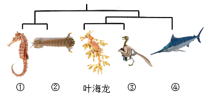
A. 属于海洋生态系统中的消费者B. 叶状附肢有利于隐藏自身
C. 其形态结构是自然选择的结果D. 图中与其亲缘关系最远的是④
【答案】D
【解析】
【分析】1．自然界中的生物，通过激烈的生存斗争，适应者生存下来，不适应者被淘汰，这就是自然选择。自然选择的主要内容是：过度繁殖、生存斗争、遗传和变异、适者生存。
2．研究表明，叶海龙的形态结构与其生存环境密切相关，能够提供有效的伪装和保护。这种形态结构的进化是通过基因的遗传和变异，并通过自然选择的过程逐渐发展和优化的。
【详解】A．消费者是指直接或间接利用生产者所制造的有机物质为食物和能量来源的生物，主要指动物。叶海龙是一种海洋动物，以漂浮的海藻和游近的小虾为食，属于海洋生态系统中的消费者，A正确。
B．叶海龙全身覆盖的叶状附肢并非用来游泳，而是使自身完美地融入周围的大型海藻中。可见，叶状附肢有利于隐藏自身，B正确。
C．那些具有有利变异（即具有更好的伪装能力）的叶海龙个体，能够完美地融入周围的大型海藻中，更容易在生存斗争中获胜并生存下来。而那些形态结构不适应环境的个体，则容易被捕食者发现或无法有效捕食，从而被淘汰。因此，叶海龙的形态结构是经过自然选择的结果，C正确。
D．结合题图可知，图中与其亲缘关系最远的是①或②，不是④，D错误。
故选D。
23. 《中国生物物种名录2023版》正式发布，共收录物种135061种，其中动物就有13861属，65362种。与2022版比较，新增10027种。下列相关叙述错误的是（ ）
A. 种是最基本的分类单位B. 同属比同种的生物相似程度更高
C. 名录可以反映我国生物多样性现状D. 物种数量的增加与生态环境改善有关
【答案】B
【解析】
【分析】1．生物分类从大到小的等级依次是：界、门、纲、目、科、属、种。
2．生物多样性包括基因（遗传）多样性、物种（生物种类）多样性和生态系统多样性。
3．保护生物的栖息环境，保护生态系统的多样性，是保护生物多样性的根本措施
【详解】AB．生物分类单位由大到小是界、门、纲、目、科、属、种。界是最大的分类单位，最基本的分类单位是种。分类单位越大，生物的相似程度越少，共同特征就越少，生物的亲缘关系就越远；分类单位越小，生物的相似程度越多，共同特征就越多，生物的亲缘关系就越近，故同属比同种的生物相似程度更低，A正确，B错误。
C．生物多样性包括基因（遗传）多样性、物种（生物种类）多样性和生态系统多样性。基因多样性决定生物种类的多样性，生物种类的多样性组成了不同的生态系统，故名录可以反映我国生物多样性现状，C正确。
D．生物的栖息环境是生物赖以生存的基础，故此，物种数量的增加，说明有适合生物的栖息环境。因此物种数量的增加与生态环境改善有关，D正确。
故选B。
24. 红豆杉是我国一级保护植物，其种子无果皮包被，颜色鲜红。红豆杉在分类中属于（ ）
A. 苔藓植物B. 蕨类植物C. 裸子植物D. 被子植物
【答案】C
【解析】
【分析】植物根据生殖细胞的不同可分为孢子植物和种子植物。孢子植物用孢子来繁殖后代，包括藻类植物、苔藓植物和蕨类植物，种子植物用种子来繁殖后代，包括裸子植物和被子植物。裸子植物的种子无果皮包被着，裸露，被子植物的种子外面有果皮包被着，能形成果实。被子植物就是常说的绿色开花植物，具有根、茎、叶、花、果实、种子。
【详解】A．苔藓植物，无根，有茎、叶的分化，没有种子，A错误。
B．蕨类植物有了根、茎、叶的分化，且体内有输导组织和机械组织，能为植株输送营养物质，没有种子，B错误。
C．种子外面无果皮包被，属于裸子植物。红豆杉是我国一级保护植物，其种子外无果皮包被，裸露，属于裸子植物，C正确。
D．被子植物的种子外面有果皮包被着，能形成果实，与题干不符合，D错误。
故选C。
25. 某药品说明书内容节选如下图，关于该药物的叙述正确的是（ ）
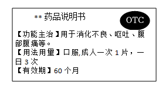
A. 需凭医生开具的处方才能购买B. 适用于消化不良患者的治疗
C. 病症严重时应加倍服用D. 超过有效期仍然可以服用
【答案】B
【解析】
【分析】安全用药是指根据病情需要，正确选择药物的品种、剂量和服用时间等，以充分发最佳效果，尽量避免药物对人体产生的不良作用或危害。
【详解】A．说明书上有非处方药（OTC）标注，因此，不需执业医师开具的处方就可以购买，按说明书服用，适用于容易自我诊断、自我治疗的小病，A错误。
B．从说明书上的功能主治可知，该药适用于消化不良患者的治疗，B正确。
C．用药前要明确诊断，要针对不同的病情，适当用药，药物一般都有一定的毒副作用，过量服用，会危害人体健康，用药剂量要适当，C错误。
D．任何药物过期都是不能使用的，任何药物都是有保质期。在使用药物前一定要先确定药物是否在有效期内，只有使用有效期内的药物才能达到临床效果，并且是安全、有效的。药在有效期过了之后使用，可以使药物的药效减弱，甚至失效。而有些药物在过期之后可能会出现药物的化学性质改变，使用之后可能会导致过敏反应或者中毒反应，引起比较严重的副作用，D错误。
故选B。
第二部分
本部分共7题，共45分。
26. 在学校开展的实践活动中，小林尝试利用天然酵母菌发面，制作馒头。他的实践记录单如下，请将该记录补充完整。
实践记录单
实践目的 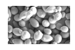 酵母菌属于______（填“细 菌”或“真菌”），在自然界分布广 泛。我想利用水果表面的天然酵母 菌制作果味馒头。 | 菌种选择 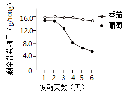 将葡萄和番茄表皮上的酵母菌分别与葡萄糖溶液混合，检测 它们的发酵能力，结果如图。因为葡萄组______，我选 择用葡萄表皮上的酵母菌来发面。 |
馒头制作 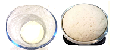 和面时要用温水，如果用开水，会 使酵母菌______，影响后续发 面过程。 我尝试在23℃、28℃和33℃条件 下发面，由于酵母菌发酵产生了 ______（填气体名称），面团 膨大至原来的1.4、1.7和1.8倍。 经过蒸制过程，馒头制作完成。 | 品鉴与反思 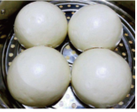 邀请同学们品尝我的劳动成果，并进行评价，结果如下表。 温度 （℃） | 感官评价（各项满分均为10分） | 松软度 | 风味 | 外观 | 色泽 | 23 | 8.4 | 8.5 | 7.8 | 8.3 | 28 | 9.2 | 9.3 | 8.6 | 8.7 | 33 | 9.0 | 9.2 | 8.5 | 8.9 |
结合面团膨大情况和评价结果，我认为最适宜的发面温度为 28℃，你同意吗？请写出你的一条理由。______ 除了温度外，在原料或制作步骤方面可能会影响馒头品质的 因素还有______，我将进一步开展实践探究。 |
【答案】 ①. 真菌 ②. 分解葡萄糖的能力更强 ③. 被杀死 ④. 二氧化碳 ⑤. 在此温度下馒头的松软度、风味、外观、色泽是最好的 ⑥. 酵母菌的数量
【解析】
【分析】做馒头或面包时，经常要用到酵母菌，酵母菌经过发酵可以分解面粉中的葡萄糖，产生二氧化碳，二氧化碳是气体，遇热膨胀而形成小孔，使得馒头或面包暄软多孔。
【详解】①实践目的：酵母菌属于单细胞真菌，具有细胞核，属于真核生物。酵母菌能分解葡萄糖产生酒精和二氧化碳，所以做馒头时经常利用酵母菌来发酵。
②菌种选择时：检测葡萄和番茄表皮上的酵母菌的发酵能力，结果发现葡萄组酵母菌分解葡萄糖的能力更强，所以选择用葡萄表皮上的酵母菌来发面。
③馒头制作时：酵母菌的生存需要适宜的温度，所以和面时要用温水，如果用开水，会使酵母菌被杀死，影响后续发面过程。
④发面后，因为酵母菌发酵会分解面粉中的糖类产生二氧化碳，所以发面后面团膨胀。
⑤结合面团膨大情况和评价结果，能看出最适宜的发面温度为28℃，有因为在此温度下作出的馒头松软度、风味、外观和色泽都是最好的。
⑥除了温度外，在原料或制作步骤方面可能会影响馒头品质的因素还有酵母菌的数量等，我将进一步开展实践探究。
27. 肺活量是《国家学生体质健康标准》中的测试指标之一。
（1）肺活量能体现肺与外界进行______的能力。测量肺活量时应尽力吸气后再______，取三次测量的______（填“最大值”或“平均值”）。
（2）研究者采用两种不同训练方式对中学生进行体育训练，一周两次，持续12周后，测算肺活量的提升率。
训练方式1：一组训练后，心率恢复到平静状态时，即开始下一组训练；
训练方式2：一组训练后，心率维持在较高水平时，即开始下一组训练。
①运动时，人体的呼吸频率和深度相应增加，使如图所示的[a]肋间肌和[b]______功能加强，胸廓扩大和缩小的幅度______。训练结果表明，两种方式均可以提高肺活量。
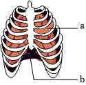
②与训练方式1相比，训练方式2肺活量的提升率更高，这主要是由于该方式训练过程中，两组训练间______。
【答案】（1） ①. 气体交换 ②. 尽力呼气 ③. 最大值
（2） ①. 膈##膈肌 ②. 增大 ③. 恢复时间较短
【解析】
【分析】肺活量是指在一次吸气排气完成过程中，整个呼吸系统容量所能吸入或排出的最大量的气体，又可称为最大呼吸容量、最大摄气量或静止量等。图中a肋间肌，b膈（膈肌）。
【小问1详解】
肺活量是人尽力吸气后再尽力呼气所能呼出的气体量，肺活量能体现肺与外界进行气体交换的能力。测量肺活量时应尽力吸气后再尽力呼气，尽力呼出所能呼出的气体。测量肺活量时，应取3次测量值的最大值，而不是平均值。
【小问2详解】
人体在吸气时，肋间肌和膈肌收缩，胸廓容积扩大，肺内气压低于外界气压，实现吸气；当肋间肌和膈肌舒张时，胸廓容积缩小，肺内气压高于外界气压，实现呼气。胸廓的运动实现了吸气和呼气，所以当人体的呼吸频率和深度相应增加时，使如图所示的[a]肋间肌和[b]膈肌功能加强，胸廓扩大和缩小的幅度增大，从而提高肺活量。在训练方式1中，一组训练后，心率恢复到平静状态时才开始下一组训练，这意味着每组训练之间有相对较长的休息时间。而在训练方式2中，一组训练后，心率维持在较高水平时即开始下一组训练，这意味着每组训练之间的休息时间相对较短。由于训练方式2中间休息时间相对较短，导致了更高的训练强度和更多的肌肉疲劳，从而促使身体适应和增强肺活量。间歇性运动恢复时间短可以加快身体代谢率，增加能量消耗，对于提升肺活量起到重要的作用。此外，较少的休息时间还可以提高身体的耐力和心肺功能。所以与训练方式1相比，训练方式2肺活量的提升率更高，这主要是由于该方式训练过程中，两组训练间恢复时间较短。
28. 柽（chēng）柳广泛分布于荒漠地区，对当地的防风固沙起到重要作用。
（1）如图所示，柽柳在形态结构、生殖方式等不同方面表现出对荒漠环境的适应。
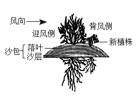
①叶特化成鳞片状，减小了叶面积，避免水分通过______作用大量散失；叶肉细胞中具有较大的______（填结构名称），能够贮存水分。
②发达的根系既利于从干旱的土壤中吸收水和______，又能固定沙土。
③可通过______（填“有性”或“无性”）生殖的方式从被沙层掩埋的枝条上长出新植株。
（2）研究人员对柽柳防风固沙功能进行野外观测，结果如下表。
与灌丛间的距离（米） | 迎风侧 | 背风侧 |
10 | 6 | 2 | 2 | 6 | 10 | 14 |
相对风速（%） | 100 | 92 | 83 | 24 | 68 | 82 | 100 |
注：a．相对风速指测量点风速占空旷地风速的百分比。
b．测量点风速为在柽柳灌丛高度的1/2处，距该灌丛不同距离迎风侧与背风侧的风速。
①据表1分析，为起到防风作用，种植柽柳的最大间距应为两侧相对风速达到______%时，所对应的距离之和。
②随着柽柳的生长，落叶和沙层逐渐堆叠，形成图1所示的隆起沙包，起到固沙作用。可通过测定沙包的______等指标，反映柽柳的生长状况和固沙效果。
（3）综上所述，柽柳既能适应环境，又能______环境。
【答案】（1） ①. 蒸腾 ②. 液泡 ③. 无机盐 ④. 无性
（2） ①. 100 ②. 厚度、宽度 （3）影响
【解析】
【分析】1．植物体通过根从土壤中吸收的水分，只有约1%被植物体利用，99%以上的水都通过B蒸腾作用以水蒸气的形式从叶片的气孔散发到大气中去了。
2．不经过两性生殖细胞的结合，由母体直接产生新个体，这种生殖方式称为无性生殖。
3．生物能够适应环境，也能影响环境。
【小问1详解】
①蒸腾作用是水分从活的植物体内以水蒸气的状态散失到大气中的过程。液泡内含细胞液，细胞液中溶解有多种物质，如或甜味或辣味的物质、色素以及糖类、无机盐、蛋白质等营养物质。柽柳叶特化成鳞片状，减小了叶面积，避免水分通过蒸腾作用作用大量散失，叶肉细胞中具有较大的液泡能够贮存水分。
②发达的根系既不仅利于从干旱的土壤中吸收水和无机盐，也可以牢牢地抓住土壤，使得植物不易被风连根拔起，固定沙土。
③柽柳从被沙层掩埋的枝条上长出新植株，这种生殖方式不经过两性生殖细胞的结合，由母体直接产生新个体，称为无性生殖。
【小问2详解】
①据表1分析，当迎风侧最大距离为10时，相对风速100%，可以达到防风效果，超出10米时，不起防风效果。当背风侧的最大距离为14米时，相对风速是100%，可以达到防风效果，超出14米时，不起防风效果。为起到防风作用，种植柽柳的最大间距应为两侧相对风速达到100%时，所对应的距离之和即10+14=24米。
②沙包是由落叶和沙层组成，随着柽柳的生长，落叶和沙层逐渐堆叠，形成图1所示的隆起沙包，起到固沙作用。故可通过测定沙包的落叶、沙层厚度、宽度等指标，反映柽柳的生长状况和固沙效果。
【小问3详解】
柽柳叶鳞片状、根系发达能适应荒漠地区，对当地起到防风固沙作用，体现了柽柳既能适应环境，又能影响环境。
29. 北京鸭由绿头鸭祖先种驯化而来，通身为白色羽、体型肥硕，而绿头鸭为有色羽、体型纤瘦。为研究北京鸭遗传和代谢的特点，科研人员开展相关研究。
（1）已知基因M与禽类羽色相关。为确定羽色的遗传特点，进行图1所示杂交实验。据图1可知，有色羽和白色羽是一对______，其中______为隐性性状。
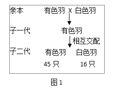
（2）家禽体型增大是提高肉质产量的前提。已知基因P能调节和控制禽类体型的大小。
①对绿头鸭与北京鸭中的基因P调控不同器官的情况进行研究，结果如图2，颜色越深表示调控强度越大。
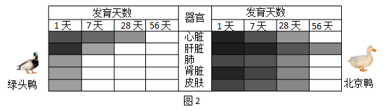
据图2可知，与绿头鸭相比，北京鸭的基因P对上述器官的调控特点为______，使其在生长发育过程中体型变得肥硕。
研究表明，在基因P调控下，北京鸭和绿头鸭对饲料的利用率存在差异。表现为北京鸭进食量明显高于同龄的绿头鸭，但其血糖水平与绿头鸭的持平。
请据此推测北京鸭体型肥硕的原因，选填字母补充在图3中______，______，______。
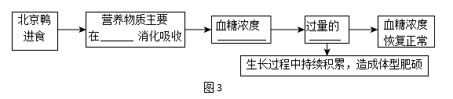
a．食管（道） b．小肠 c．升高 d．降低
e．葡萄糖转化为脂肪等储能物质 f．葡萄糖氧化分解为二氧化碳和水
（3）综上所述，生物的性状是由______控制的，北京鸭的优良性状是遗传变异和人工选择的结果。若采用______技术，可将基因M或基因P转入家禽体内，以期改良家禽的性状。
【答案】（1） ①. 相对性状 ②. 白色羽
（2） ①. 强度大、时间长
②. b ③. c ④. e
（3） ①. 基因 ②. 转基因
【解析】
【分析】1．生物体的形态特征、生理特征和行为方式叫做性状，同种生物同一性状的不同表现形式叫做相对性状。
2．在一对相对性状的遗传过程中，子代个体出现了亲代没有的性状，则新出现的性状一定是隐性性状，由一对隐性基因控制。亲代个体表现的性状是显性性状，亲代的基因组成中既有显性基因，也有隐性基因，是杂合体。
3．转基因技术是把一种生物的某个基因，用生物技术的方法转入到另一种生物的基因组中，培育出转基因生物，就可能表现出转基因所控制的性状。
【小问1详解】
有色羽和白色羽是禽类毛色不同表现型，是一对相对性状。子一代是有色羽，子二代出现白色羽，则白色羽是新出现的性状，是隐性性状。
【小问2详解】
基因P能调节和控制禽类体型的大小。由图2知，北京鸭的基因P调控的强度比绿头鸭大，时间长，导致北京鸭在生长发育过程中体型变得肥硕。b小肠是消化食物和吸收营养物质的主要场所。北京鸭进食的营养物质在b小肠内吸收消化，食物中的糖类被吸收回到血液，体内血糖浓度c升高，此时胰岛素含量增加，促进血糖合成糖元，加速血糖的分解，从而降低血糖的浓度。若体内过量的e葡萄糖会被转化为脂肪等储能物质，在生长过程中，脂肪等储能物质持续积累，就造成体型肥胖。
【小问3详解】
生物体的形态特征、生理特征和行为方式叫做性状，由（1）（2）知，基因控制生物的性状。转基因技术指运用科学手段从某种生物中提取所需要的基因，将其转入另一种生物中，使与另一种生物的基因进行重组，从而产生特定的具有优良遗传性状的新品种。故若采用转基因技术，可将基因M或基因P转入家禽体内，以期改良家禽的性状。
30. 有研究表明，可利用图1所示的微针贴片治疗心肌梗塞（简称心梗）引起的心肌纤维化。
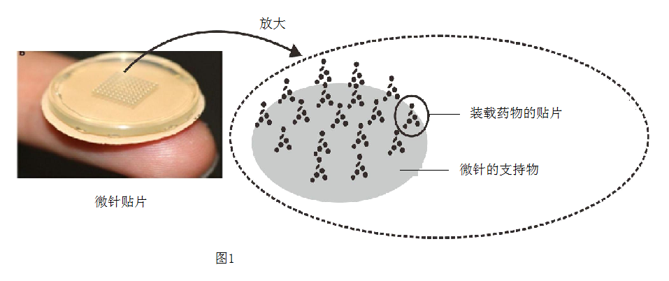
（1）冠状动脉可为心肌细胞输送所需的营养物质和______（填气体名称）。心梗是由于部分心肌的血液供应受阻，引起心肌发生缺血性坏死，表现为过度纤维化，弹性下降。这会导致心肌有节律地______和舒张功能降低。
（2）科研人员利用微针贴片装载物质G，研究其对心肌纤维化的影响。
①影响微针给药量的因素包括微针______（填字母，多选）。
a．长度 b．表面积 c．在支持物上的分布密度
②对心肌纤维化模型鼠进行不同处理，结果如图2。据图2可知，物质G能够______心肌纤维化程度。为排除空白微针贴片的影响，评估物质G对心肌纤维化的作用应比较______两组的数据。
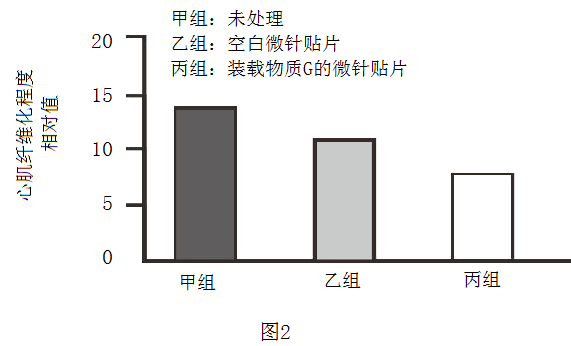
（3）微针贴片可通过微创手术直接送达心脏表面，贴于心肌纤维化部位。若将该技术应用于心梗患者的治疗，请写出其优势或不足：______（写出一条即可）。
【答案】（1） ①. 氧气
②. 收缩
（2） ①. abc ②. 减轻 ③. 甲、丙
（3）优势是减轻手术对心脏的损伤和患者的痛苦等，不足是微针贴片会对心脏的功能是否有其他影响等。
【解析】
【分析】心脏是血液循环的动力器官。充分认识心血管疾病的危害，积极干预心血管危险因素，预防心血管疾病的发生，具有十分重要的意义。
【小问1详解】
主动脉基部的冠状动脉逐级分支深入心肌，形成毛细血管网，给心肌细胞提供所需的营养和氧气，并运走代谢废物。心脏的功能是通过有节律的收缩和舒张为血液循环提供动力。心梗是由于部分心肌的血液供应受阻，引起心肌发生缺血性坏死，表现为过度纤维化，弹性下降。这会导致心肌有节律地收缩和舒张功能降低。
【小问2详解】
①若用微针贴片装载物质G，研究其对心肌纤维化的影响则影响微针给药量的因素包括微针a长度、b表面积和c在支持物上的分布密度，长度越长，表面积越大，分布密度越大，给药量越多。
②据图2可知，物质G能够减轻心肌纤维化程度。若想排除空白微针贴片的影响，直接评估物质G对心肌纤维化的作用，应比较甲和丙两组的数据。
【小问3详解】
微针贴片可通过微创手术直接送达心脏表面，贴于心肌纤维化部位。若将该技术应用于心梗患者的治疗，优势是减轻患者手术对心脏的损伤和患者的痛苦等，不足是微针贴片会对心脏的功能是否有其他影响等。
31. 月季切花具有极高的观赏和经济价值，但瓶插观赏期较短。研究发现茎皮层的光合作用与切花品质和观赏期有密切关系。
（1）月季切花的茎呈现绿色，图1为茎段示意图。皮层细胞的______中含有叶绿素，能吸收光能。光是光合作用的必要条件，不同光照强度下皮层光合作用强度不同。
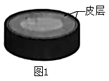
（2）为探究茎皮层光合作用对月季切花品质和观赏期的影响，科研人员利用图2所示装置开展实验。每天测算花朵直径的增长率，直到花朵萎蔫、观赏期结束，结果如图3。
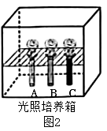
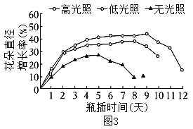
①图2中A试管不做处理，B试管用多层保鲜膜包裹，C试管用黑纸包裹，分别对应了图3中______三种条件。
②实验过程中需保证光照培养箱中______等条件一致。
③分析图3可知，皮层的光合作用可促使花朵直径增大，判断依据为______；同时可延长切花的观赏期。与无光照组相比，高光照组可将观赏期延长______天。
（3）切花常因切口处细菌感染、伤口愈合等因素，引起导管堵塞，进而导致供水不足，影响切花品质和缩短观赏期。但研究发现，茎皮层的光合作用可通过促进皮层吸水缓解这一现象。科研人员通过图4所示的实验加以验证。
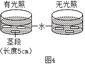
①实验中茎段两端的切口需用防水胶封堵，目的是避免______对实验结果造成影响。
②测定茎段的起始质量和浸泡8小时后的质量，支持“茎皮层光合作用可以促进皮层吸水”这一结论的实验结果应为______。
（4）基于上述研究，可采用______的方法延长切花观赏期。（写出一条即可）
【答案】（1）叶绿体 （2） ①. 高光照、低光照、无光照 ②. 水、二氧化碳 ③. 高光照的花朵直径增长率比低光照、无光照的高 ④. 4
（3） ①. 细菌感染、伤口愈合 ②. 有光照 （4）晒太阳
【解析】
【分析】1．对照实验是在研究一种条件对研究对象的影响时，所进行的除了这种条件不同外，其他条件都相同的实验，这个不同的条件，就是唯一变量。一般的对实验变量进行处理的，就是实验组，没有对实验变量进行处理的就是对照组。为确保实验组、对照组实验结果的合理性，对影响实验的其他相关因素应设置均处于相同且理想状态，这样做的目的是控制单一变量，便于排除其它因素对实验结果的影响和干扰。
2．绿色植物通过叶绿体利用光能，把二氧化碳和水转化成储存能量的有机物（如淀粉），并且释放出氧气的过程，叫做光合作用。
【小问1详解】
叶绿体是光合作用的场所，把光能转化为化学能贮存在有机物中，是绿色植物细胞特有的一种能量转换器。皮层细胞的叶绿体中含有叶绿素，能吸收光能。光是光合作用的必要条件，不同光照强度下皮层光合作用强度不同。
【小问2详解】
①光是光合作用的条件，因此图2中A试管不做处理，B试管用多层保鲜膜包裹，C试管用黑纸包裹，分别对应了图3中高光照、低光照、无光照的三种条件。
②光合作用的原料是二氧化碳和水；场所是叶绿体；条件是光。故实验过程中需保证光照培养箱中二氧化碳、水等条件一致。
光是光合作用的条件，高光照的花朵直径增长率比低光照、无光照的高，由此可知，皮层的光合作用可促使花朵直径增大。通过实验结果：花朵直径增长率越大，切花的观赏期时间越长。与无光照组相比，高光照组可将观赏期延长12-8=4天
【小问3详解】
切花常因切口处细菌感染、伤口愈合等因素，引起导管堵塞，进而导致供水不足。故①实验中茎段两端的切口需用防水胶封堵，目的是避免细菌感染、伤口愈合对实验结果造成影响。
②光是光合作用的条件，因此，有光照的实验能支持茎皮层光合作用可以促进皮层吸水的实验结论。
【小问4详解】
通过以上实验可知，茎皮层光合作用可以促进皮层吸水、促使花朵直径增大，延长切花的观赏期，故可采用晒太阳的方法延长切花观赏期。
32. 阅读科普短文，回答问题。
提到蜜蜂，人们往往想到的是香甜的蜂蜜、六边形的巢穴和穿梭于花丛间的忙碌“身影”。在自然界中蜜蜂不仅是酿造者、建筑师，更是传粉“使者”，需要传粉的植物中有90%都依赖于蜜蜂传粉。
近年来研究发现，蜜蜂的物种多样性大幅度下降。引起蜜蜂种类和数量减少的因素是复杂多样的，如气候变化使一些植物提前开花，而蜜蜂的生物钟不能尽快适应，导致采蜜时间和蜜源植物花期不一致；农业生产中杀虫剂的使用不当可能会直接杀死蜜蜂，也会影响蜜蜂卵和幼虫的发育，降低蛹的羽化率；土地用途的改变导致蜜蜂栖息地减少；外来蜂种的引进可提高作物产量，但会争夺本土蜜蜂的蜜粉源。
为解决这些问题，我国科研人员从不同方面开展了大量研究（如图），成果可观。
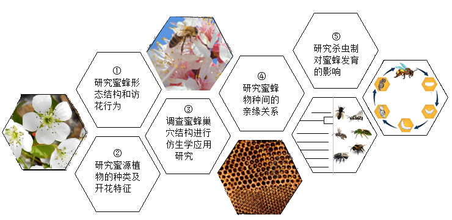
除了专业研究之外，不同社会角色都应关注蜜蜂等传粉昆虫的保护工作，这对于粮食安全和农业可持续发展具有重要意义、每年5月20日是“世界蜜蜂日”，今年的主题是“‘蜜’切参与——发展农业生产，保护传粉昆虫”，以此来呼吁人们积极参与，为保护蜜蜂等传粉昆虫做贡献，共同构建“蜜蜂友好型”社会。
（1）研究蜜蜂需要先了解它。蜜蜂的身体和附肢分节，属于______动物门昆虫纲，发育类型为______发育。蜜蜂传粉有助于实现同种植物间的______（填“自花”或“异花”）传粉，提高后代的变异性，促进农业提质增产。
（2）外来蜂种和本地蜂种间存在______关系，在引进外来蜂种时需要考虑生态安全。
（3）为解决“引起蜜蜂生物钟与蜜源植物花期不一致”的问题，可以从图中所示的______（填序号，多选）方面进行研究。
（4）不同社会角色都应“蜜”切参与到保护蜜蜂的行动中，作为一名中学生，你可以做的是：______（写出一条即可）。
【答案】（1） ①. 节肢
②. 完全变态 ③. 异花 （2）竞争 （3）①②
（4）不破坏花草、不破坏蜂巢
【解析】
【分析】蜜蜂属于节肢动物，发育过程包括：受精卵→幼虫→蛹→成虫四个时期，为完全变态发育。
【小问1详解】
蜜蜂的身体和附肢分节，属于节肢动物门昆虫纲，蜜蜂的发育过程包括：受精卵→幼虫→蛹→成虫四个时期，为完全变态发育。蜜蜂在花朵间传粉有助于实现同种植物间的异花传粉，提高后代的变异性，促进农业提质增产。
 小问2详解】
小问2详解】
由资料可知，外来蜂种和本地蜂种间争夺蜜粉源，属于竞争关系。
【小问3详解】
由资料可知，气候变化使一些植物提前开花，而蜜蜂的生物钟不能尽快适应，导致采蜜时间和蜜源植物花期不一致。为解决“引起蜜蜂生物钟与蜜源植物花期不一致”的问题，可以从图中所示的①研究蜜蜂形态结构和访花行为、②研究蜜源植物的种类及开花特征方面进行研究。
【小问4详解】
可以通过不破坏花草、不破坏蜂巢等方式为保护蜜蜂尽自己的一份力。